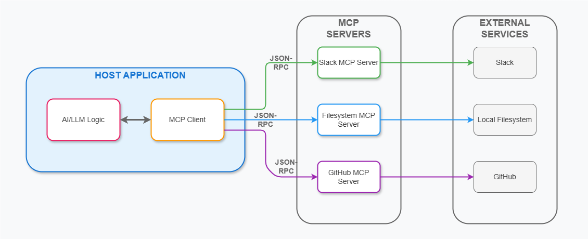

Module 3 — Episode 5
Training:Agentic AI Training
🎯 Learning Objectives
By the end of this episode, you will be able to:
- ✅ Explain what the Model Context Protocol (MCP) is and why it exists
- ✅ Understand how MCP standardizes LLM access to external tools and data sources
- ✅ Implement or integrate an MCP client or server in your own applications
🧭 Overview
This episode introduces the Model Context Protocol (MCP) — a standard originally proposed by Anthropic and now adopted widely across the AI ecosystem. MCP enables Large Language Models (LLMs) to access external data and tools in a consistent, standardized way.
By learning MCP, developers can connect their AI applications to services like GitHub, Slack, or Google Drive without building custom integrations for each. This dramatically reduces redundant effort across the developer community.
🧱 Prerequisites
Readers should already understand:
- Fundamentals of tool use in agentic AI systems
- How LLMs call external APIs or functions
- Basic knowledge of client-server architectures
🔑 Core Concepts
- MCP (Model Context Protocol) – A standard interface for connecting LLM-based applications to external data sources and tools.
- Client – The application (often an LLM-based system) that requests access to data or functionality.
- Server – The service providing access to data or performing actions (e.g., a GitHub MCP server).
- Resources – Data-fetching endpoints exposed via MCP (e.g., fetching files, listing pull requests).
- Tools – Functional endpoints exposed via MCP that perform actions or computations.
🖼 Visual Explanation
 Caption:This architecture diagram shows how MCP reduces integration complexity from M × N (each app with each tool) to M + N (each app and tool integrating once with the protocol).
⚙️ Technical Breakdown
How It Works
1. MCP Clients send standardized requests to MCP servers.
2. MCP Servers wrap external APIs (e.g., GitHub, Slack) and expose them through the MCP interface.
3. The LLM or application uses these standardized calls to fetch data or perform actions.
4. Responses from the MCP server are fed back into the LLM’s context, enabling the model to reason about and summarize the fetched information.
Example Workflow:- The LLM (client) requests: “Summarize the README.md from this GitHub repo.”
- The MCP client sends a request to the GitHub MCP server to fetch the file.
- The server responds with the file contents.
- The client feeds this data into the LLM’s context.
- The LLM generates a summary.
Why It Works
MCP introduces a common language between AI models and external systems.
Instead of each developer writing custom wrappers for every API, MCP defines a shared protocol that both clients and servers can implement once.
This standardization:
- Reduces duplicated effort
- Improves interoperability
- Simplifies tool discovery and integration
When To Use It
✅ Ideal Scenarios- Building AI applications that need access to multiple external data sources
- Developing tools or APIs you want to make easily accessible to LLMs
- Creating modular, pluggable AI systems
- When a system only needs a single, tightly controlled API
- For highly specialized integrations that don’t benefit from a shared standard
Trade-offs & Limitations
- Complexity: Requires understanding the MCP specification and implementing both client and server sides properly.
- Performance: Adds an intermediate layer between the LLM and the underlying APIs.
- Ecosystem Maturity: While rapidly growing, MCP is still evolving, and tooling may vary in stability.
Performance Considerations
- Latency: Each MCP request introduces network overhead.
- Caching: Implement caching where possible to reduce repeated data fetches.
- Scalability: Servers should handle concurrent requests efficiently, especially for popular resources like GitHub or Slack.
💻 Code Examples
Minimal Example (Conceptual)
# Example: Using an MCP client to fetch data from a GitHub MCP server
from mcp_client import MCPClient
# Initialize the MCP client and connect to the GitHub MCP server
client = MCPClient(server_url="https://mcp.github.com")
# Example request: Fetch a README.md file from a repository
response = client.request(
resource="file",
params={"repo": "ai-suite", "path": "README.md"}
)
# Feed the response into your LLM for summarization
summary = llm.summarize(response.content)
print(summary)
🚀 Key Takeaways
- MCP standardizes how LLMs interact with external tools and data.
- It transforms integration complexity from M × N to M + N, saving massive developer effort.
- You can build both MCP clients (applications consuming tools) and MCP servers (services exposing tools).
- The MCP ecosystem is expanding rapidly — learning it will position you well for building next-generation agentic applications.
📚 Further Learning
- DeepLearning.AI — Model Context Protocol Course (for in-depth MCP implementation details)
- Official MCP documentation and community repositories
> The next module focuses on Evaluations and Error Analysis — a critical skill for systematically improving agentic workflows and ensuring reliable AI system performance.